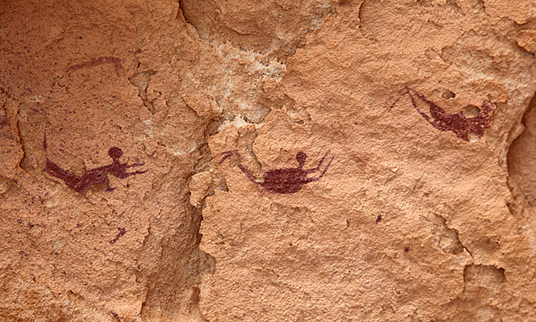

HISTORY
TYPE
TOOL
EFFECT
PLACE
수영의 기원
수영은 물과 인간이 모두 지구 상에 있을 때부터 일어난 고대의 활동이다.
이집트 남서부의 선사시대 그림은 수영하는 사람들의 모습을 보여준다.
그 이미지들은 개 노를 젓거나 평영을 하는 것처럼 보이지만,
이것들은 그 어떤 것보다도 의례적인 것이었는지도 모른다.

물론 고대에는 생존을 위해 수영이 행해졌다.
사람들이 반대편에서 안전하게 강을 건너야 했든,
익사하지 않기 위해 단순히 물을 밟는 방법을 알았든 간에,
수영은 확실히 고대로부터 먼 길을 왔다.
오늘날 알려진 바와 같이 경쟁적인 의미에서의 수영의 역사는 이렇다.